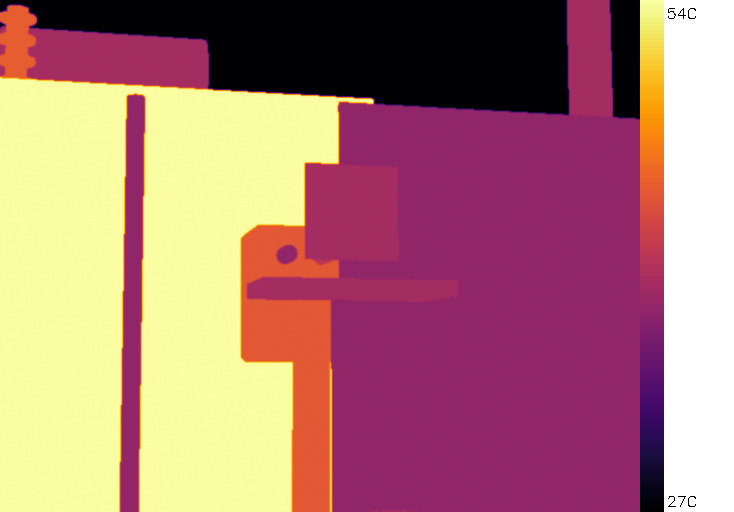
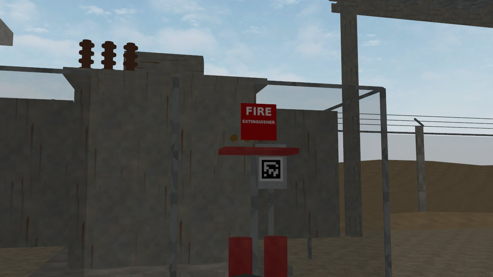
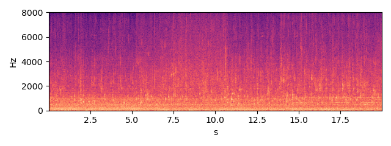
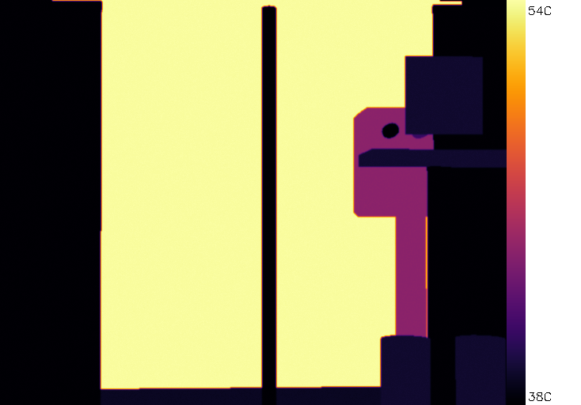
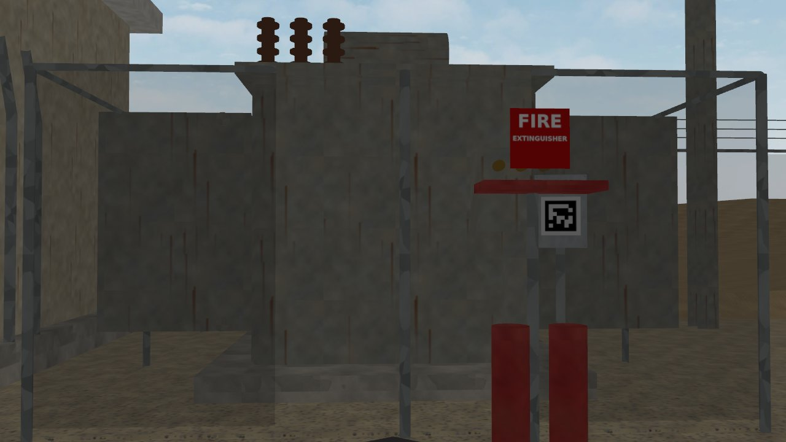
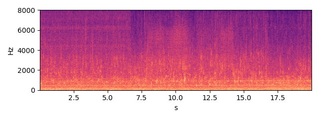
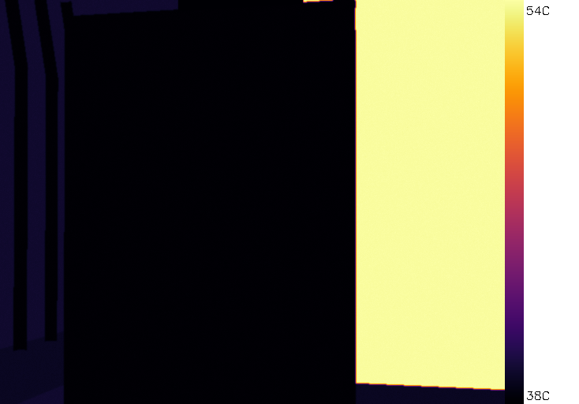
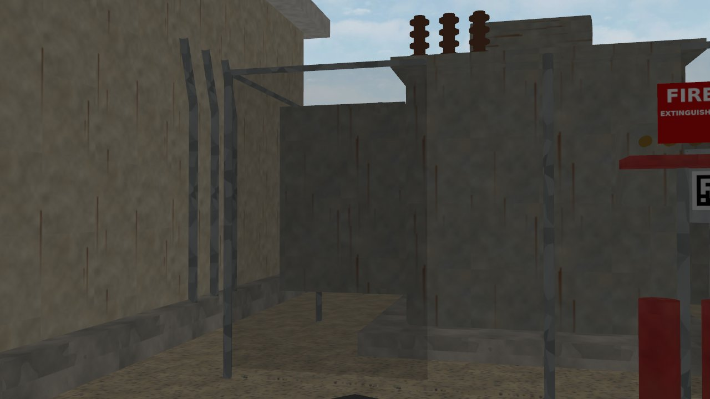
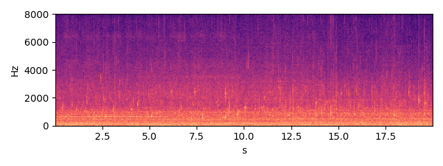

TR-01 — ONAN distribution transformer 11/0.415 kV
Status none HI 0.88 RUL ≥ 90 d (cap) (band = 90 % interval)
Health indicator per inspection round; vertical lines = maintenance log entries; red band = RUL estimate.
Inspection snapshots (robot camera and microphone)
From the Gazebo full-mode rounds of the same seed (scenario days 1-3, open loop); the trend above is the 21-day fast-mode run. They are different runs.

thermal, aim 1, max 54.5 C (Gazebo round 2026-10-03 16:41)

RGB, aim 1

sound, aim 1 (dwell window)

thermal, aim 2, max 54.5 C (Gazebo round 2026-10-03 16:41)

RGB, aim 2

sound, aim 2 (dwell window)

thermal, aim 3, max 54.5 C (Gazebo round 2026-10-03 16:41)

RGB, aim 3

sound, aim 3 (dwell window)
Alarm history
| time | level | fused score | HI | reasons | work order |
|---|
Maintenance log (CMMS view)
| date | type | details |
|---|